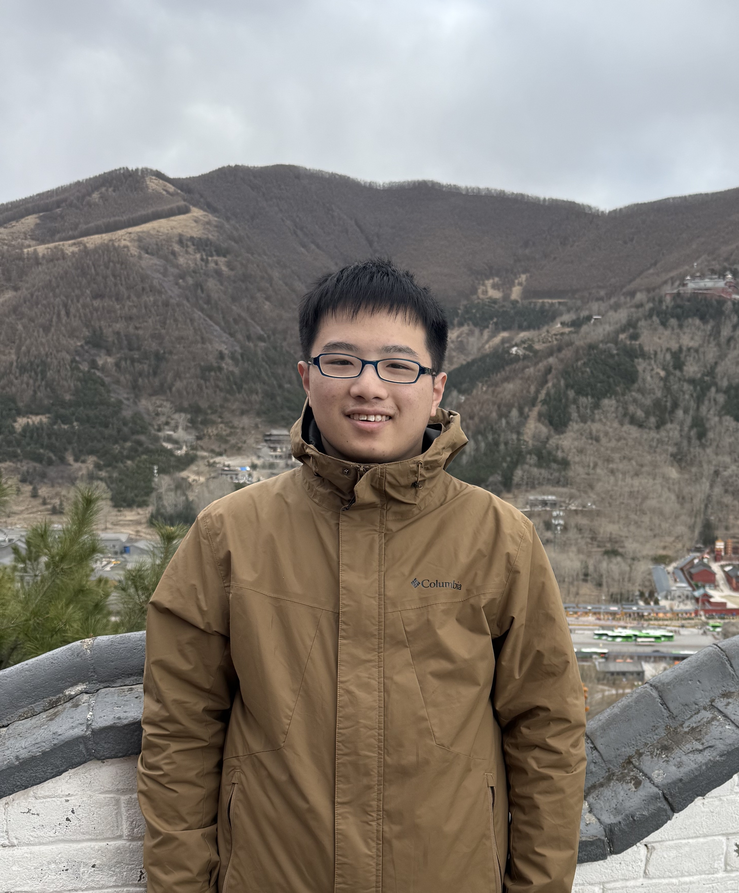

Research Assistant
EPCC Lab, Shanghai Jiao Tong University
Co-advised by Prof. Jingwen Leng and Prof. Shixuan Sun

Incoming PhD student · UC San Diego
I am an incoming PhD student in Computer Science at the University of California San Diego, advised by Prof. Yufei Ding. My research interests are GPU systems, compilers, and distributed systems.
I received my B.E. in Computer Science from Shanghai Jiao Tong University, where I was a member of the John Hopcroft Class. I was advised by Prof. Jingwen Leng and Prof. Shixuan Sun at EPCC Lab.
* Equal contribution.
EPCC Lab, Shanghai Jiao Tong University
Co-advised by Prof. Jingwen Leng and Prof. Shixuan Sun
Picasso Lab, University of California San Diego
Advised by Prof. Yufei Ding
Ph.D. in Computer Science · Advisor: Prof. Yufei Ding
B.E. in Computer Science · John Hopcroft Class